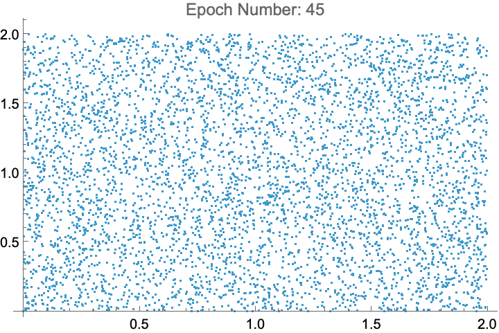
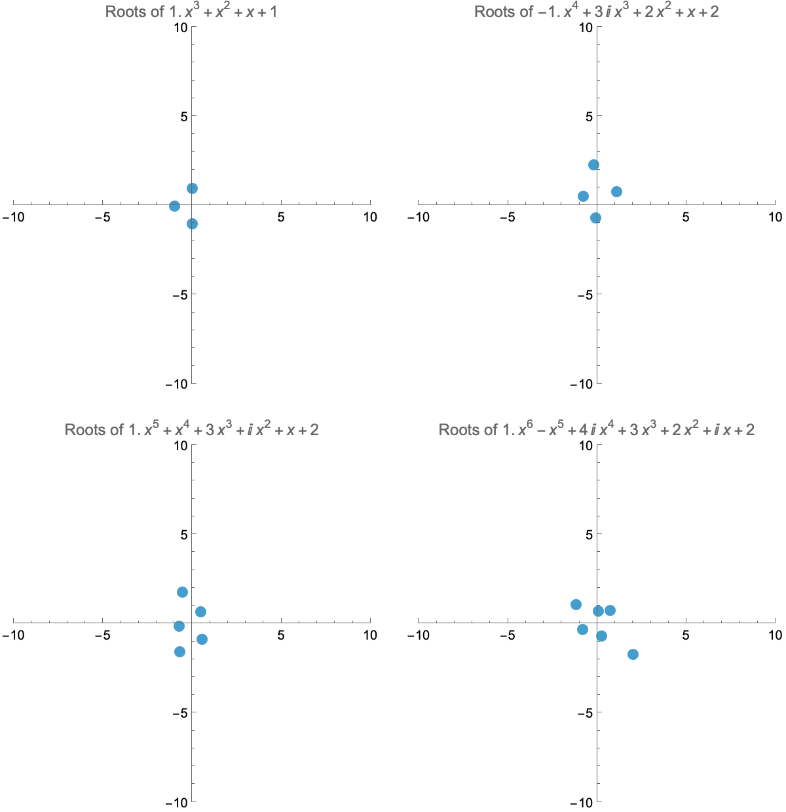

Principal Components Analysis can be used to reduce the dimension of points by projecting them onto a smaller dimensional space. Here are some examples of 3D shapes being projected onto their first 2 principal components.
A Single Layer Preceptron cannot solve the XOR problem. It can be solved using Multilayer Preceptrons, more commonly known as Neural Networks. Here is an animation of a Neural Network with one hidden layer of size 2 learning the XOR problem.
By the Fundamental Theorem of Algebra, polynomials of degree n to have n roots (up to multiplicity). If the subleading coefficient is not zero, as the leading coefficient of a polynomial tends to zero, one of its roots will shoot to infinity:
